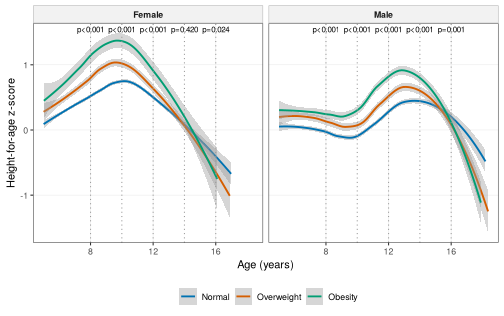
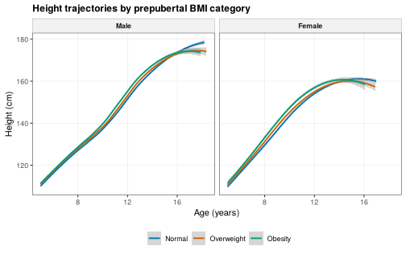

About this vignette. All data are simulated with
wgh_simulate(). The results show how the methods work and resemble the published patterns, but they are not the published findings and are not research results. The functions run in development mode (wgh_config("dev")).
Children with overweight or obesity before puberty are often taller than their peers and then lose that advantage during adolescence. This vignette reproduces the longitudinal analysis of that pattern (Ho et al. 2026) [1]: assigning each child a BMI category at a prepubertal index age, comparing height-for-age between the categories at milestone ages, and modelling the whole trajectory with a mixed model. It ends with the flow that does it in one call. The vignette is precomputed.
library(WeGrowHealthR)
wgh_config("dev")
#> WeGrowHealthR run mode: dev
v <- wgh_simulate(30000, seed = 2026)$visits1. The analytic sample
Trajectories need repeated visits. wgh_sample_flow()
applies the restrictions in order and records how many children each
step removes.
fl <- wgh_sample_flow(v, "Ages 5 to 18" = ~ age >= 5 & age <= 18.5,
"At least 2 visits" = wgh_min_visits(2))
fl
#> <wgh_sample_flow>: 2 restriction steps
#> # A tibble: 3 x 5
#> step children visits children_lost pct_children_retained
#> <chr> <int> <int> <int> <dbl>
#> 1 Start 24182 63343 NA 100
#> 2 Ages 5 to 18 19167 48250 5015 79.3
#> 3 At least 2 visits 12345 41428 6822 51.1
#> Children retained by site (%):
#> # A tibble: 3 x 4
#> step `% Site1` `% Site2` `% Site3`
#> <chr> <dbl> <dbl> <dbl>
#> 1 Start 100 100 100
#> 2 Ages 5 to 18 79.5 78.9 79
#> 3 At least 2 visits 51.1 50.1 52.8The restricted data are in fl$data.
2. Exposure at a prepubertal index age
wgh_index_exposure() picks one visit per child in an
index window and attaches its value to every visit of that child. The
defaults follow the study: the earliest visit from 5 years and at or
before 11 years in boys and 9 years in girls (max_age), so
the exposure is measured before most children enter puberty.
categories turns the value into groups, here the WHO BMI
categories without a separate thinness group.
ix <- wgh_index_exposure(fl$data, "baz", max_age = c(Male = 11, Female = 9),
categories = function(b, a) wgh_bmi_category(b, a, thinness = FALSE))
ix$index_cat <- droplevels(ix$index_cat)
first <- ix[!duplicated(ix$id), ]
table(first$sex, first$index_cat)
#>
#> Normal Overweight Obesity
#> Male 2495 1214 1127
#> Female 2663 812 269index_value holds the index BAZ, index_age
the age at the index visit and index_cat the category. Each
child keeps the same values at all visits.
3. Comparing groups at milestone ages
wgh_compare_groups() compares an outcome between groups
in windows around stated ages (ages, with half-width
window). It runs a Kruskal-Wallis test across all groups
and Dunn pairwise tests with Holm adjustment.
kw <- wgh_compare_groups(ix, "haz", "index_cat", ages = c(8, 10, 12, 14, 16), by = "sex")
kw$overall
#> # A tibble: 10 x 7
#> sex age n statistic df p_value medians
#> <chr> <chr> <int> <dbl> <int> <dbl> <chr>
#> 1 Male 8 2251 38.4 2 4.51e- 9 Normal: -0.04; Overweight: 0.12; Obesity: 0.19
#> 2 Female 8 1956 111. 2 6.20e-25 Normal: 0.48; Overweight: 0.68; Obesity: 1.23
#> 3 Male 10 2057 69.9 2 6.76e-16 Normal: -0.12; Overweight: 0.06; Obesity: 0.19
#> 4 Female 10 1766 104. 2 2.05e-23 Normal: 0.73; Overweight: 1.01; Obesity: 1.26
#> 5 Male 12 1252 73.0 2 1.43e-16 Normal: 0.36; Overweight: 0.6; Obesity: 0.95
#> 6 Female 12 854 21.7 2 1.96e- 5 Normal: 0.46; Overweight: 0.66; Obesity: 0.81
#> 7 Male 14 692 16.4 2 2.71e- 4 Normal: 0.61; Overweight: 0.78; Obesity: 0.86
#> 8 Female 14 451 1.74 2 4.20e- 1 Normal: -0.04; Overweight: 0.06; Obesity: 0.24
#> 9 Male 16 278 13.2 2 1.33e- 3 Normal: 0.16; Overweight: -0.2; Obesity: -0.08
#> 10 Female 16 85 7.45 2 2.41e- 2 Normal: -0.05; Overweight: -0.32; Obesity: -0.81
head(kw$pairwise)
#> # A tibble: 6 x 7
#> sex age group1 group2 z p_value p_adjusted
#> <chr> <chr> <chr> <chr> <dbl> <dbl> <dbl>
#> 1 Male 8 Normal Overweight -3.84 1.21e- 4 2.42e- 4
#> 2 Male 8 Normal Obesity -5.85 5.06e- 9 1.52e- 8
#> 3 Male 8 Overweight Obesity -1.93 5.31e- 2 5.31e- 2
#> 4 Female 8 Normal Overweight -6.33 2.51e-10 5.02e-10
#> 5 Female 8 Normal Obesity -9.30 1.37e-20 4.11e-20
#> 6 Female 8 Overweight Obesity -5.03 4.91e- 7 4.91e- 7
wgh_plot_trajectories(ix, "haz", "index_cat", milestones = c(8, 10, 12, 14, 16))
Before puberty, children with obesity have the highest
height-for-age. The curves converge in adolescence, and in girls the
order even reverses: by 16 years girls who had obesity before puberty
are the shortest group. wgh_plot_trajectories() takes the
same display options as every plot, for example
show_ci = FALSE or legend = "right".
4. A mixed model of the trajectory
The group comparisons use cross-sections. A linear mixed model uses
every visit of every child. wgh_fit_lmm() fits HAZ with a
natural spline of age interacting with the index category, a fixed site
effect, and a random intercept and slope for age within child
(random = "(1 + age_c | id)", with age centred at 10
years).
girls <- ix[ix$sex == "Female", ]
fit_g <- wgh_fit_lmm(girls, haz ~ splines::ns(age, df = 3) * index_cat + site)
wgh_fit_stats(fit_g)
#> # A tibble: 1 x 7
#> AIC BIC logLik sigma R2_marginal R2_conditional ICC
#> <dbl> <dbl> <dbl> <dbl> <dbl> <dbl> <dbl>
#> 1 11101. 11236. -5532. 0.179 0.197 0.946 0.931The marginal R2 is the variance explained by the fixed effects and the conditional R2 adds the child random effects. A large difference between them, and a high ICC, means most of the variation in HAZ is stable differences between children, as expected for height.
wgh_contrasts() reads the model at stated ages and
compares categories pairwise (with emmeans):
ct <- wgh_contrasts(fit_g, "index_cat", ages = c(8, 12, 16))
ct$contrasts
#> # A tibble: 9 x 9
#> contrast age estimate SE df asymp.LCL asymp.UCL z.ratio p.value
#> <fct> <dbl> <dbl> <dbl> <dbl> <dbl> <dbl> <dbl> <dbl>
#> 1 Overweight - Normal 8 0.257 0.0277 Inf 0.191 0.324 9.28 3.39e-20
#> 2 Obesity - Normal 8 0.592 0.0442 Inf 0.486 0.698 13.4 1.67e-40
#> 3 Obesity - Overweight 8 0.335 0.0485 Inf 0.219 0.451 6.91 4.93e-12
#> 4 Overweight - Normal 12 0.179 0.0355 Inf 0.0945 0.264 5.06 8.44e- 7
#> 5 Obesity - Normal 12 0.337 0.0551 Inf 0.206 0.469 6.12 2.72e- 9
#> 6 Obesity - Overweight 12 0.158 0.0607 Inf 0.0128 0.303 2.61 9.18e- 3
#> 7 Overweight - Normal 16 -0.163 0.0737 Inf -0.339 0.0138 -2.21 2.74e- 2
#> 8 Obesity - Normal 16 -0.524 0.114 Inf -0.797 -0.251 -4.59 1.31e- 5
#> 9 Obesity - Overweight 16 -0.361 0.126 Inf -0.662 -0.0598 -2.87 8.23e- 3Each row is a difference in mean HAZ between two categories at one age, with a Holm-adjusted p-value. In girls, those with obesity before puberty are taller than those with normal BMI at 8 years, the advantage shrinks by 12 years, and it turns into a deficit by 16 years. This is the pattern of earlier puberty and an earlier end of growth.
5. Changes in BMI category
wgh_exposure_change() compares each child’s category at
two ages, to see how stable the exposure is.
ch <- wgh_exposure_change(fl$data, ages = c(7, 10))
table(ch$sex, ch$change)
#>
#> Normal to Overweight Normal to Thinness Obesity to Overweight Overweight to Normal
#> Male 61 7 88 107
#> Female 32 12 30 114
#>
#> Overweight to Obesity Stable Normal Stable Obesity Stable Overweight Stable Thinness
#> Male 35 636 320 237 20
#> Female 12 913 79 175 16
#>
#> Thinness to Normal
#> Male 8
#> Female 96. The whole study in one call
rep <- wgh_flow_index_trajectory(v)
rep
#>
#> -- Prepubertal BMI and height trajectory (Ho et al. 2026, medRxiv 2026.07.26.26358003) --
#>
#> Tables (9): index_category, kruskal_wallis, dunn, median_haz, fit_stats_male, fit_stats_female,
#> contrasts, bmi_change, sensitivity_4plus_visits
#> Figures (2): fig_trajectories, fig_height_trajectories
#> Models: Male, Female
#> Settings: mode = dev; index_age = 11/ 9
rep$tables$contrasts
#> # A tibble: 30 x 10
#> sex contrast age estimate SE df asymp.LCL asymp.UCL z.ratio p.value
#> <chr> <fct> <dbl> <dbl> <dbl> <dbl> <dbl> <dbl> <dbl> <dbl>
#> 1 Male Overweight - Normal 8 0.108 0.0308 Inf 0.0346 0.182 3.52 4.37e- 4
#> 2 Male Obesity - Normal 8 0.266 0.0316 Inf 0.191 0.342 8.42 1.15e-16
#> 3 Male Obesity - Overweight 8 0.158 0.0365 Inf 0.0706 0.245 4.33 2.96e- 5
#> 4 Male Overweight - Normal 10 0.208 0.0284 Inf 0.140 0.276 7.33 4.74e-13
#> 5 Male Obesity - Normal 10 0.441 0.0292 Inf 0.371 0.511 15.1 4.19e-51
#> 6 Male Obesity - Overweight 10 0.233 0.0335 Inf 0.152 0.313 6.94 3.87e-12
#> 7 Male Overweight - Normal 12 0.255 0.0297 Inf 0.184 0.326 8.60 1.60e-17
#> 8 Male Obesity - Normal 12 0.499 0.0304 Inf 0.426 0.571 16.4 3.64e-60
#> 9 Male Obesity - Overweight 12 0.244 0.0347 Inf 0.161 0.327 7.02 2.19e-12
#> 10 Male Overweight - Normal 14 0.211 0.0339 Inf 0.130 0.292 6.22 1.00e- 9
#> # i 20 more rows
plot(rep, "fig_height_trajectories", title = "Height trajectories by prepubertal BMI category")
The report also contains a sensitivity analysis restricted to
children with at least four visits
(rep$tables$sensitivity_4plus_visits), which checks that
the result does not depend on children seen only twice.
Where to go next
- Timing of the pubertal spurt explains why the advantage disappears.
See
vignette("growth-curves"). -
wgh_mediation()estimates how much of an effect passes through a mediator, andwgh_exposure_window()defines exposures in a window before an outcome without leakage.
References
- Ho NT, Hermiston M, Nguyen QT, Nguyen MA, Nguyen QV, Dao AQ, Tran CTL, Nguyen QN, Phung LN, Do CT, Pham AN. Effect of pre-pubertal body mass index status on longitudinal height trajectory in Vietnamese children: 2018-2025 school health analysis. medRxiv. 2026. 2026.07.26.26358003. https://doi.org/10.64898/2026.07.26.26358003